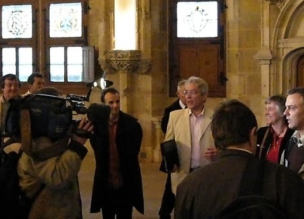
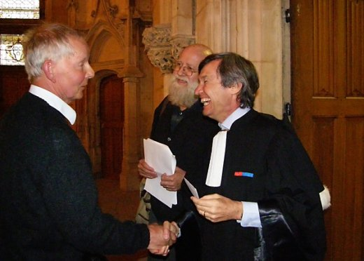

| |
Site dédié à la publication d'informations communiquées par le Collectif des déboulonneurs. En aucun cas ce site n'appelle à des actions illégales. | |
 |
||
|
Accueil du site > Rouen > Compte rendu du procès d’un barbouilleur, à Rouen, le 11 mai 2007
En bref :
En plus long : La pub a passé un sale quart d’heure au T.G.I de Rouen, ce vendredi 11 mai. 1) De 12h30 à 13h10, trente activistes ont animé la rue devant le Palais de Justice, avec statues silencieuses et pancartes, tracts distribués, quilles de cirque et trompette. 2) 70 personnes ont pu faire le déplacement à 13h10 pour entrer dans le Palais de Justice. Mais comme le prétoire ne fut pas celui escompté avec ses 100 places, plusieurs ont dû attendre pour entrer à leur tour dans le prétoire de ce jour. 3) Les comparants volontaires, Johann Lachèvre et François Huvé ont été invités par le président du tribunal, suite à la demande très juridique de Maître Roux, à venir s’asseoir sur le banc des prévenus. Ils ont pu s’exprimer, ce qui constitue une victoire juridique car c’est la première fois, bien que n’étant pas jugés par décision du président du tribunal, que des comparants volontaires ont pu être pris en considération et parler. Désormais, le procès des déboulonneurs de pub de Rouen constitue une jurisprudence très précieuse au regard du droit. Maître Roux saura exploiter cette jurisprudence pour les procès à venir de Déboulonneurs et Faucheurs volontaires. 4) Le procès a duré au total presque trois heures, le président du tribunal ayant pris soin d’expédier rapidement les affaires courantes. 5) Lors de sa déposition (les faits et leurs motifs), François Vaillant s’en est donné à coeur joie contre l’invasion publicitaire, sans oublier de citer le projet du Maire de Rouen avec JCDecaux qui voudrait faire passer de 1200 m2 à 1500 m2 les surfaces des dispositifs publicitaires de Rouen, en échange de vélos JCDecaux qui ne serviront à rien pour désengorger le centre ville.

6) Les trois témoins, de l’avis de tous, ont été en or. Le président du tribunal et le procureur en sont restés bouche bée. Les témoins, Nicolas Hervé, Claude Got et François Boespflug ont pu parler très librement. Leur témoignage ont séduit tout autant les auditeurs silencieux que la Cour. Oui, la pub est un danger sanitaire et éthique. 7) Le président du tribunal a bien organisé les débats, il en fut remercié. 8) Le procureur a créé au final la surprise, demandant une dispense de peine. C’est une première dans un procès de déboulonneurs. L’incroyable a donc jailli à Rouen. 9) Maître Roux a plaidé magistralement la relaxe vu qu’il y a selon lui état de nécessité pour s’opposer à la loi de 1979 sur l’affichage publicitaire, loi obsolète et détournée par les afficheurs. 10) Le verdict sera rendu le 12 juin, à 13h10. Le prévenu y sera, vous pouvez encore l’accompagner. 11) La presse locale, dont Paris Normandie, a fort bien parlé de ce procès, avant et après. Les radios locales ont été également prenantes. France3 Haute Normandie a parlé de ce procès dans le journal de 19h le vendredi 11 mai et le samedi 12 mai. Le Canard Enchaîné y est revenu dans sa livraison du mercredi 16 mai, car la journaliste Dominique Simonnot a fait le déplacement depuis Paris. 12) Près de cinquante lettres de soutien au prévenu ont été communiquées par l’avocat au président du tribunal. 13) Après le procès, nous étions 30 à nous retrouver pour nous restaurer et débattre du présent et du futur du Collectif des déboulonneurs où seuls les barbouilleurs agissent en désobéissance civile non-violente. 13) Actuellement, le Collectif des déboulonneurs a reçu 1.200 euros pour aider à payer les divers frais de justice qui s’élèveront, tout compris, à environ 3.500 €. Merci à tous ceux et celles qui ont manifesté un soutien moral et/ou financier. Tout signe a été et demeure important. On peut toujours envoyer un chèque de soutien ( à partir de 10 €), à : Collectif des déboulonneurs, Centre 160, 82 rue Jeanne d’Arc, 76000 Rouen. Chèque à l’ordre de : Collectif des déboulonneurs. 14) Une soirée sur la désobéissance civile est programmée le lundi 21 mai, à 20h30, à la salle St Clément, 180 rue St Julien, Rouen rive gauche, à l’initiative du MAN, avec la participation des déboulonneurs de Rouen, et des organisations pressenties : Les Verts, Faucheurs Volontaires, Greenpeace et RESF. À noter sur son agenda. Avec Sarkozy élu président de la République, il importe d’explorer les richesses de la désobéissance civile en non-violence pour résister et combattre sa politique qui s’annonce déjà inquiétante. Rendez-vous le 21 mai pour en débattre à Rouen.

Sans la disponibilité et le savoir-faire de plusieurs militants du Collectif de Rouen, ce procès n’aurait pas eu tant de relief. Félicitons-nous pour l’accueil de ceux qui venaient de Paris, Orléans, de toute la Haute Normandie, pour les consignes de joyeuse non-violence qui sont même allés jusqu’à souffler les policiers gardiens du tribunal ! Aucune fausse note durant tout le procès qui fut en réalité celui de l’invasion publicitaire. |
|
Site utilisant SPIP - Hébergement Ouvaton
|